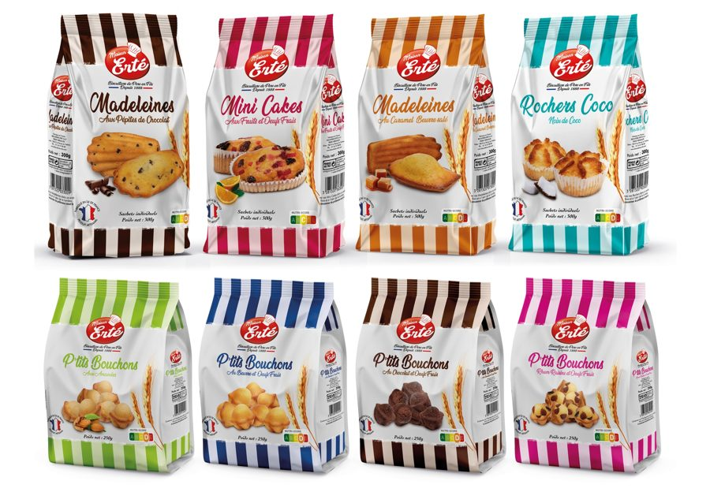
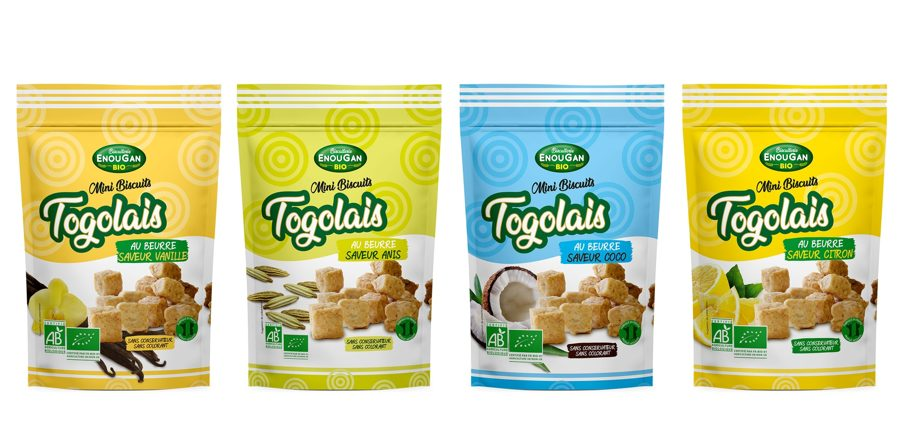
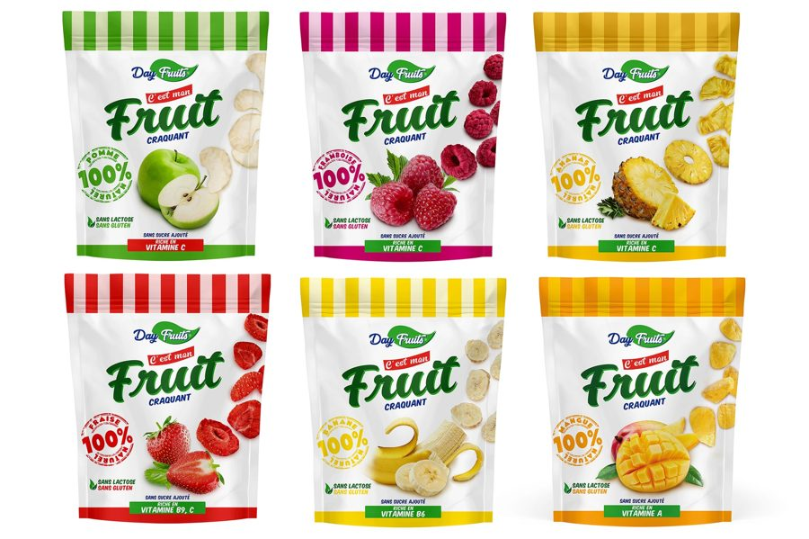
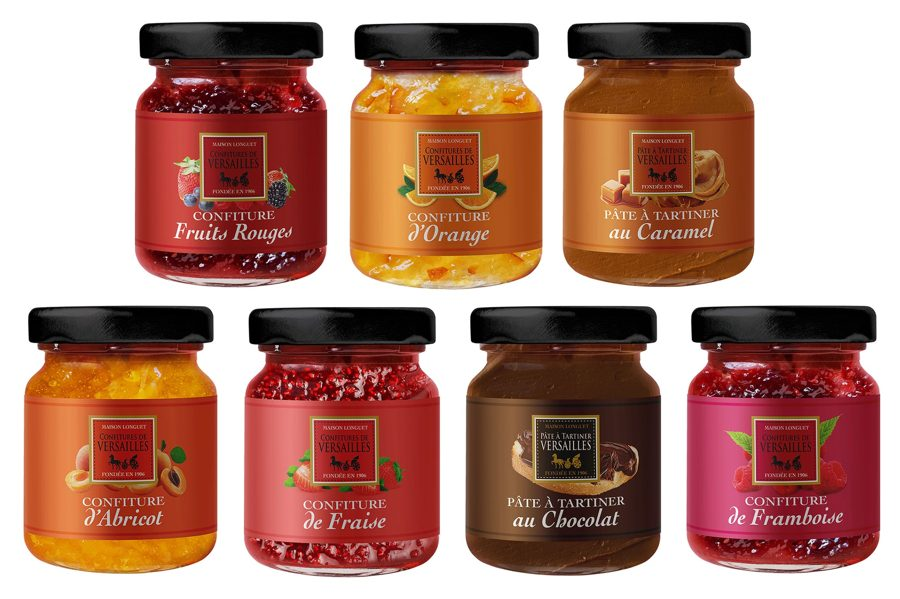
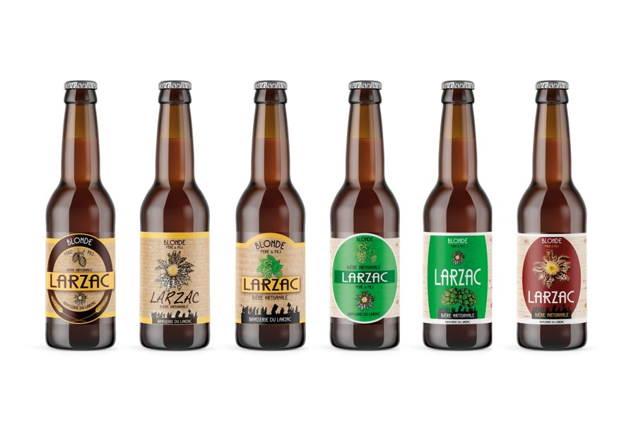
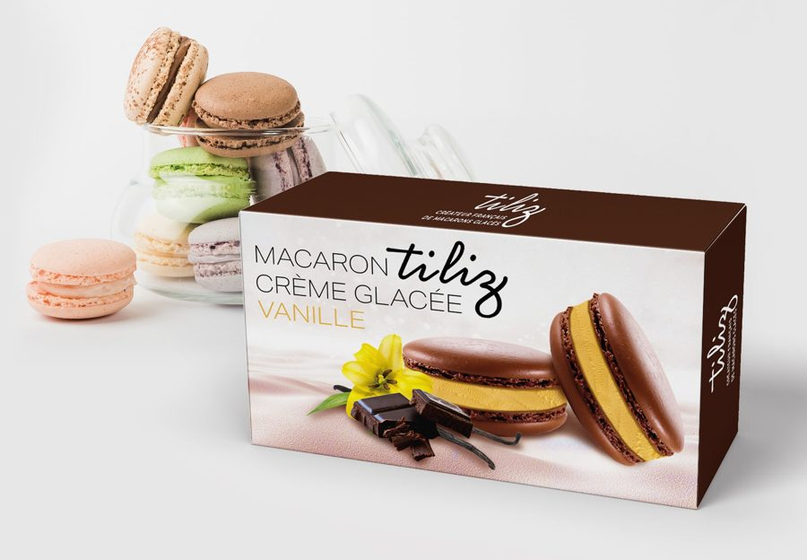
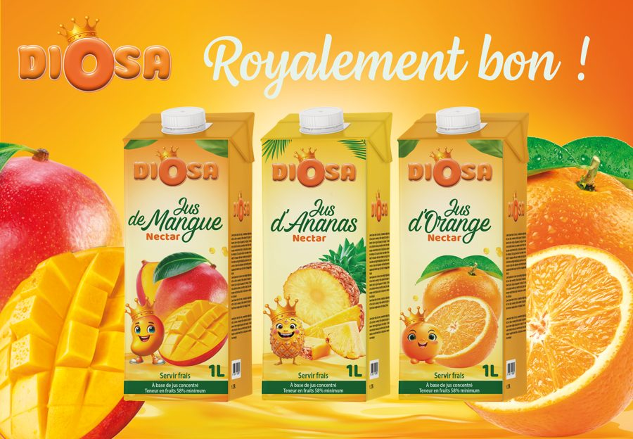
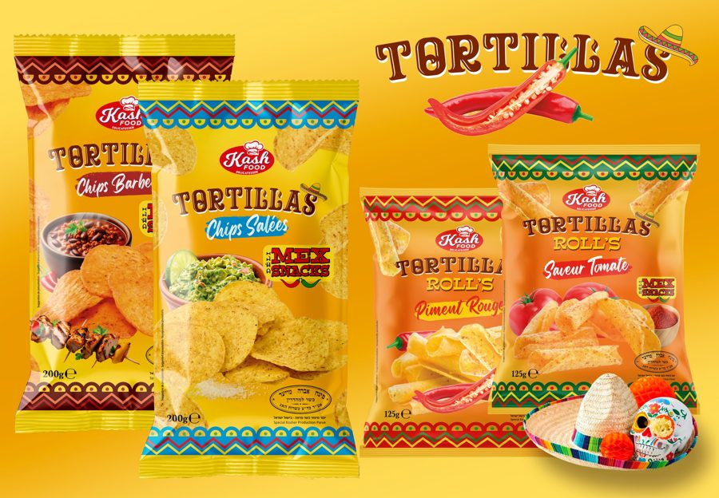
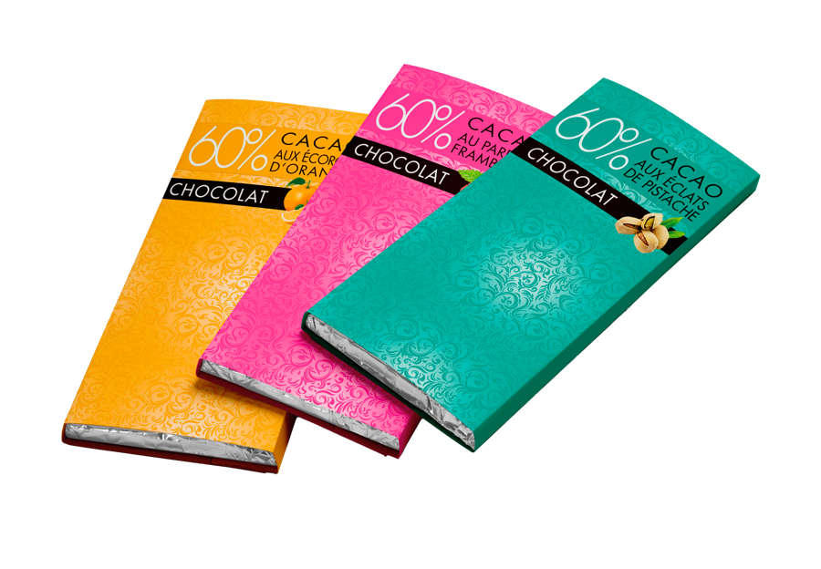

Creative Keys — trois directions (premier écran de l'accueil, palette, polices)
Les images sont ses vraies réalisations. Pas de logo Creative Keys sur le site actuel (la bannière est une photo de plage de banque d'images) : nom composé en lettres dans chaque direction.
A · En rayonRecommandéeClair, énergique, ludique · « Démarquez-vous de la concurrence », au sens propre
CREATIVE KEYSPackaging · Print & PLV · Logos & sites · ContactDemander un devis








Habillez votre marque. Démarquez-vous.

Chocolat 60 % · gamme packaging
Demander un devis
30 ans de packaging · Paris et périphérie
Fond studio #EDECE8
Cartes #FFFFFF
Encre, bandes #121212
Accent #2B3CF0
Étiquette #FFE14A
Vos emballagesm'emballent Bricolage Grotesque (titres, très gras, étroit) · Instrument Serif italique (le mot qui ressort) · Instrument Sans (texte)
Ouverture : un linéaire gris se remplit de ses packagings, un seul sort du rang et vient au premier plan.
Galerie « tête de gondole » épinglée, cartes qui s'inclinent à la vitesse, mur de logos, sites en vitrine.
Voile : deux portes coulissantes de magasin (rideau).
B · Le patron de découpeClair, précis, atelier · la boîte avant qu'elle soit pliée
Vos marquesm'impressionnent Familjen Grotesk (titres) · Fraunces italique fine (le mot qui ressort) · Instrument Sans (texte)
Ouverture : le patron d'une boîte se dessine (traits de coupe rouges, rainages bleus en pointillé), puis se plie en 3D et s'ouvre sur une vraie réalisation.
Repères de coupe aux coins des grandes photos, bandes kraft pour rythmer.
Voile : la feuille glisse comme sous un massicot.
C · Sous le spotSombre, premium, ludique · ses couleurs éclatent sur le noir